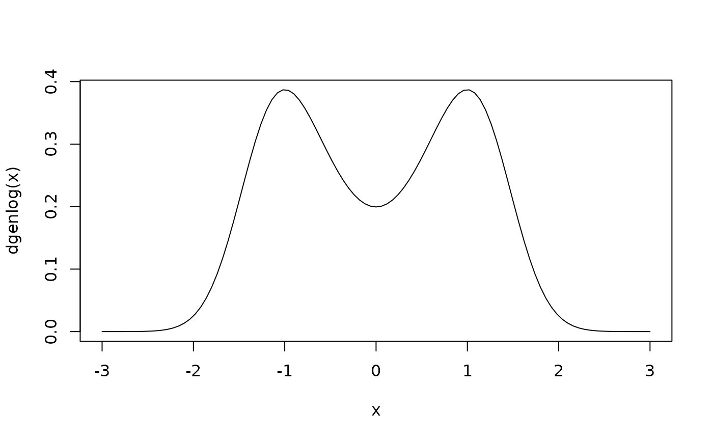

The Generalized logistic distribution
distrib.RdDensity, distribution function, quantile function and random generation a generalized logistic distribution.
Arguments
- a, b, p
parameters \(\ge 0\), with restrictions.*
- mu
mu parameter
- lower.tail
logical; if TRUE (default), probabilities are \(P[X \le x]\) otherwise, \(P[X > x]\).
- x, q
vector of quantiles.
- k
vector of probabilities.
- n
number of observations. If length(n) > 1, the length is taken to be the number required
Value
dgenlog gives the density, pgenlog gives the distribution function,
qgenlog gives the quantile function, and rgenlog generates random deviates.
The length of the result is determined by n for rgenlog, and is the maximum of the lengths
of the numerical arguments for the other functions.
Details
The used distribution for this package is given by: $$f(x) = ((a + b*(1+p)*(|x-mu|^p))*exp(-(x-mu)*(a+b*(|x-mu|^p)))) / ((exp(-(x-mu)*(a + b* (|x-mu|^p)))+1)^2)$$
The default values for a, b, p and mu produces a function with mean 0 and variance close to 1.
*Restrictions:
If p equals to 0, b or a must be 0 otherwise there is identifiability problem.
The distribution is not defined for a and b equal to 0 simultaneously.
References
Rathie, P. N. and Swamee, P. K (2006) On a new invertible generalized logistic distribution approximation to normal distribution, Technical Research Report in Statistics, 07/2006, Dept. of Statistics, Univ. of Brasilia, Brasilia, Brazil.
Examples
pgenlog(0.5)
#> [1] 0.6133563
curve(dgenlog(x), xlim = c(-3,3))

rgenlog(100)
#> [1] -1.384665536 1.127636944 0.453645443 -1.150411842 -1.892490321
#> [6] -0.165871481 -0.011141693 -0.801253961 0.862660824 0.966515316
#> [11] 1.239865214 -1.102993992 -1.603206004 -0.714199084 -0.441937701
#> [16] -1.048771598 -0.437314739 -1.451812742 -0.492574066 1.675029441
#> [21] -0.800909063 0.710568524 0.869156101 -1.048026855 1.720607255
#> [26] 0.885600691 -1.507183733 0.149550757 0.760965280 0.740202652
#> [31] -1.623443098 -0.971471722 -0.770418068 0.579788897 -0.104501393
#> [36] -0.321354435 0.790735545 1.507294915 -1.088777022 -0.993856779
#> [41] 0.715810182 -0.005787101 0.596950035 0.655998551 -1.331362935
#> [46] 0.948582653 0.959145549 1.854691677 1.635889858 -0.490827382
#> [51] -0.190632331 -0.729222936 -1.103693469 0.156112736 -0.031880572
#> [56] 0.984062837 -1.026727218 0.809962172 -1.445274335 -0.610292379
#> [61] 1.103364026 -0.844703743 0.330793068 -0.668275280 0.436551020
#> [66] -1.059561616 1.503354763 0.207851761 0.217734486 -0.831795571
#> [71] -0.257511610 -0.552960625 -1.646382761 -0.167816779 -0.487743758
#> [76] -1.714627000 -0.534176272 0.286993560 1.189732366 -0.506569894
#> [81] 0.138437467 0.453181111 -0.877944176 -0.800472888 -0.099326472
#> [86] 1.387442687 -0.448048524 -1.003482926 0.690919054 -1.473765624
#> [91] 2.033888226 -1.172751220 0.092574240 1.159466417 0.823282964
#> [96] -0.930609252 0.229011995 1.128890543 -1.647175059 -0.151496981
qgenlog(0.95)
#> [1] 1.5143